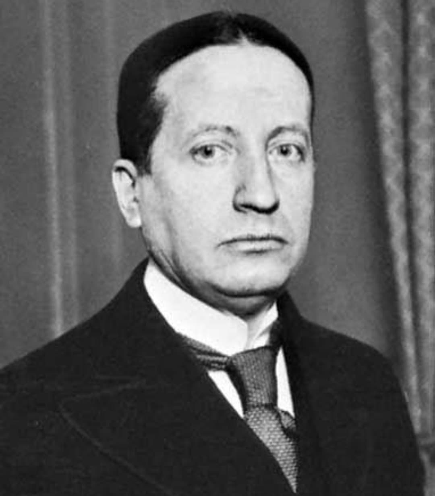

Georges Mandel est l’une des figures les plus fortes et les plus intègres de la vie politique française durant la Seconde Guerre mondiale. Ministre de l’Intérieur en juin 1940, il refuse catégoriquement l’armistice et incarne la résistance morale de la République au moment où l’État s’effondre. Son courage, sa lucidité et sa fidélité à l’idéal républicain en font l’un des hommes qui ont encouragé Charles de Gaulle à poursuivre la lutte depuis Londres.
Nom : Louis Georges Rothschild, dit Georges Mandel
Dates : 5 juin 1885 – 7 juillet 1944
Nationalité : Française
Fonction : Ministre de l’Intérieur (1940)
Rôle : Opposant majeur à l’armistice, soutien politique de De Gaulle
Mandel est un homme politique républicain, proche de Clemenceau, connu pour son intransigeance face aux ennemis de la démocratie. En juin 1940, alors que la France s’effondre, il refuse toute idée d’armistice et défend la poursuite de la guerre depuis l’Empire. Il incarne une ligne politique ferme : ne jamais céder à la pression allemande, ne jamais abandonner la République.
Mandel est l’un des rares ministres à s’opposer frontalement à la capitulation. Il estime que la France doit continuer la lutte, même dans des conditions difficiles, plutôt que de se placer sous la tutelle de l’ennemi. C’est lui qui encourage De Gaulle à quitter la France avant la chute du gouvernement, lui déclarant : « La France aura besoin de vous ». Par ce geste, il donne à De Gaulle une légitimité morale pour incarner la résistance extérieure.
Mandel voit en De Gaulle un homme capable de porter la voix d’une France qui refuse la défaite. Il le soutient politiquement, l’encourage à rejoindre Londres et lui donne la conviction qu’il représente la continuité de l’État républicain. Leur relation est fondée sur une vision commune : la France ne doit jamais renoncer.
Après l’arrivée au pouvoir du régime de Vichy, Mandel est arrêté, livré aux Allemands, puis interné dans plusieurs camps. En juillet 1944, alors que la France est sur le point d’être libérée, il est assassiné par la Milice française dans la forêt de Fontainebleau. Sa mort symbolise la haine que le régime de Vichy vouait aux défenseurs de la République.
Georges Mandel est considéré comme l’un des symboles de la résistance morale à l’armistice. Son courage, sa clairvoyance et sa fidélité à la République en font une figure majeure de l’histoire politique française. Son soutien à De Gaulle a contribué à la naissance de la France Libre.